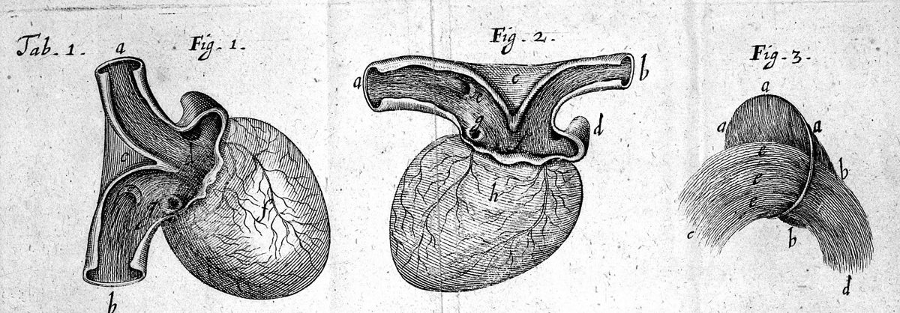
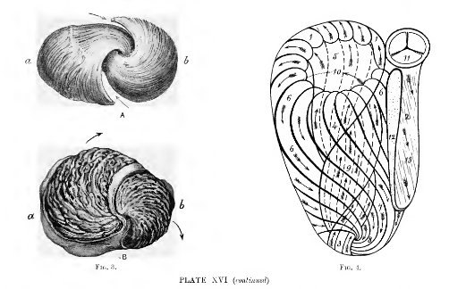

The average adult heart, from CT scans (Rodero et al. 2021).52 bpm
I teach physicsto neural networks.
I’m Tomás, an ML engineer in Santiago, Chile. I build physics-informed neural networks
for heart mechanics, and compressed versions that still get the answer right.
Its muscle cells run in sheets that wind around the ventricles. When they shorten together
the wall thickens, the base pulls down toward the apex and the whole organ wrings itself
out. The light that crosses it before each beat is the electrical wave that sets it off.

Richard Lower drew the fibres on the surface of the heart in 1669, in Tractatus de Corde. Wellcome Collection, CC BY 4.0.
+60° inside,−60° outside.
Through the thickness of the wall the fibre angle turns by about 120 degrees. The lines
on the right are traced through the fibre field of this exact mesh, the one a simulation
of it would use. My MSc at PUC Chile, with Francisco Sahli, is about cardiac fibre
mechanics with physics-informed networks.

James Bell Pettigrew dissected the vortex at the apex in 1860 and drew its spirals by hand. Public domain.
From imagesto motion.
In Graz, from February to August 2026, I worked with Federica Caforio’s group on PINN
architectures that estimate how the heart moves, in JAX. We still work together. This is
the kind of data it starts from: a cine MRI, four chambers in one slice.
Cine MRI, four-chamber view, one beat. Doregan, Wikimedia Commons, CC BY-SA 4.0.
Five demos that runin your browser.
No backend, nothing pre-rendered. Each is a solver or a model running on your machine while
you watch. Below, each one’s own physics, running now.
A network learns the 1D Burgers equation with no data at all: the loss is the PDE itself,
differentiated on your GPU. Behind this text, the exact solution it is trained to find,
shock and all.
Answers over 24 passages from the scientific ML papers I read. BM25 retrieval runs in the
page, as it does behind this text; bring any OpenAI-compatible key and a model answers
from what it found.
Same Burgers problem, two methods. The solver marches through every time step; the
operator answers in one call. The demo times both on your machine instead of quoting a paper.
I got into machine learning through scientific computing, and most of what I’ve done since
has been about making neural networks respect the physics they approximate.
My undergraduate thesis at Universidad de los Andes compressed physics-informed networks
(distillation, pruning, quantization) for non-Newtonian flow; the manuscript is in
preparation. Since 2025 I’ve been doing an MSc at PUC Chile with Francisco Sahli, which
took me to Federica Caforio’s group in Graz for the first half of 2026.
The rest of the time I build things to find out whether they work: the demos above, a
series of language models under 16 MB, a file-transfer system that is still running at a
mining company.
I’m open to ML and AI roles, remote or on-site: part-time while I finish the MSc,
full-time after. Spanish is my first language and English my second; my German is just starting.
TomásSantiago, Chile
Where I’ve been.
Feb to Aug 2026
Visiting researcher
University of Graz, Federica Caforio’s group
PINN architectures for cardiac mechanics in JAX: differentiable PDE simulation and multi-view reconstruction scored with MSE and SSIM.
Since 2025
MSc in Engineering Sciences
Pontificia Universidad Católica de Chile, advised by Francisco Sahli
PINNs for cardiac fibre modelling. Grew out of the undergraduate thesis on compressing them.
Since 2025
Tiny language models
Exploration
Transformers under 16 MB with custom tokenizers and quantized weights, scored by bits per byte on FineWeb, trained at home on an RTX 5060.
Jan to Feb 2025
DevOps intern
Citi, Chile Tech Center
Kept three legacy applications running and reworked the production CI/CD pipeline so deployments took less time and fewer steps.
2024 to 2025
Undergraduate thesis
Universidad de los Andes, manuscript in preparation
Distillation, pruning and quantization applied to PINN surrogates of Carbopol flow, measuring what each technique costs in accuracy.
Sep 2024
Turbo Files
In production at a mining company
Fault-tolerant transfer of large files in Django: files travel as fragments, so a flaky connection doesn’t kill the transfer.
2023 to 2024
Teaching assistant, six courses
Universidad de los Andes, computer science
Dec 2023 to Feb 2024
AI research intern
Falabella Retail
2020 to 2025
BSc in Computer Science engineering
Universidad de los Andes, minor in innovation
Day to day: Python, PyTorch, JAX, CUDA; HuggingFace and TensorFlow when a project lives there.
Also: JavaScript, C and C++, SQL, Django, React, Docker, AWS, Linux.